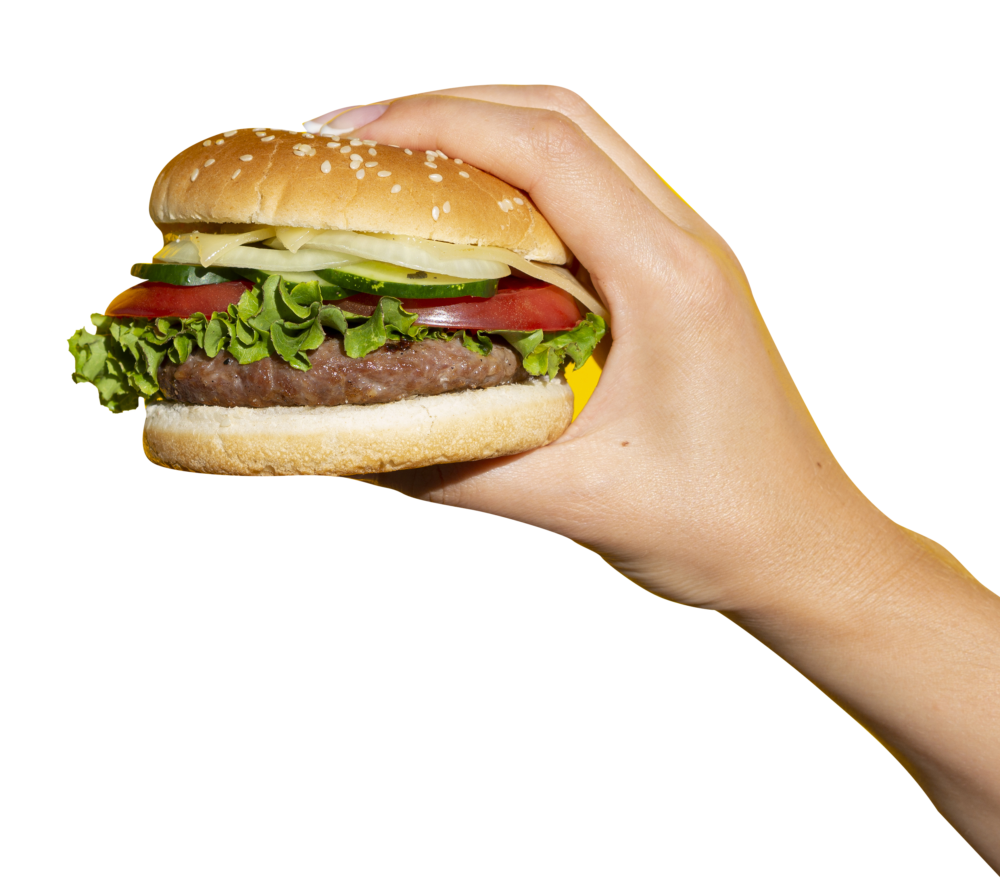

El kétchup que sale de la botella solo puede ser igual de buena que los tomates que entran en ella. Descubre más aquí sobre lo que hace único el sabor de Heinz.

Dale un giro a una receta clásica
Del kétchup a las alubias, inspírese con recetas atrevidas tan emblemáticas como Heinz.
LA HISTORIA DE HEINZ
Henry J Heinz llevaba 25 años viviendo en Pensilvania cuando comenzó a vender el rábano picante de su madre. Decidió vender el producto en una botella transparente para demostrar la pureza y calidad.